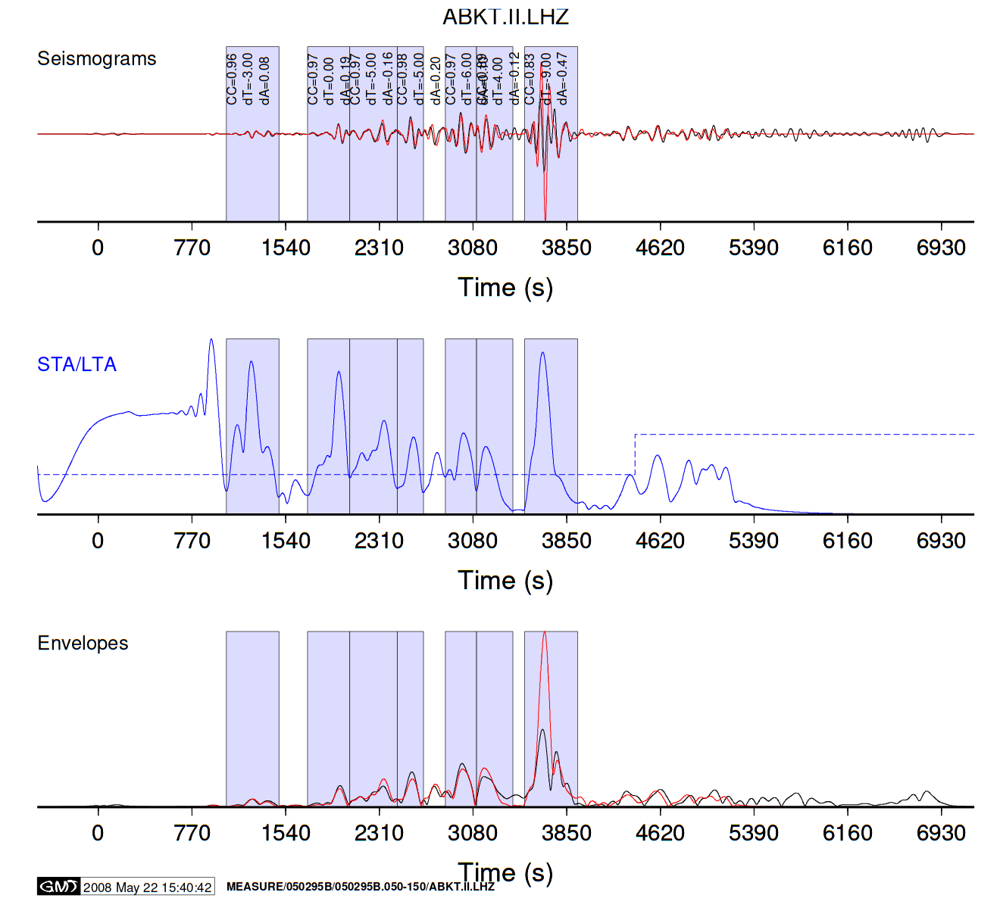
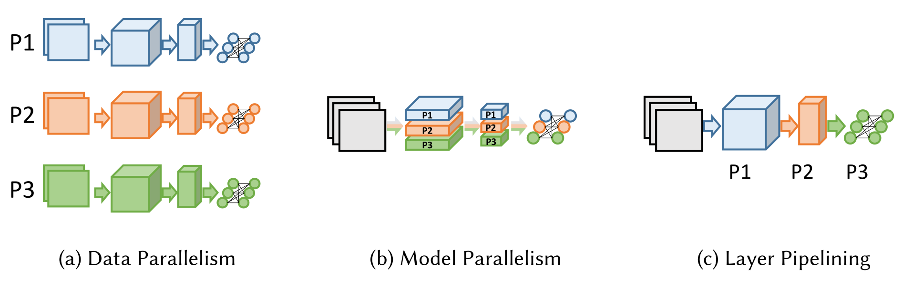
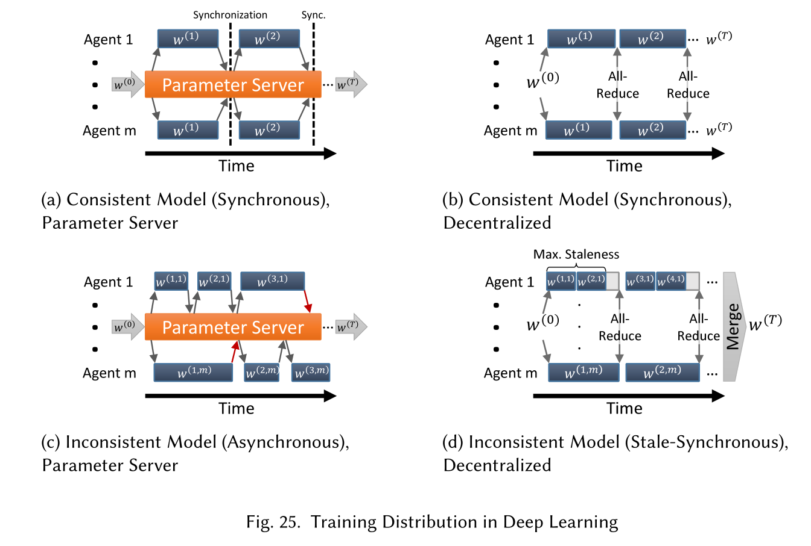
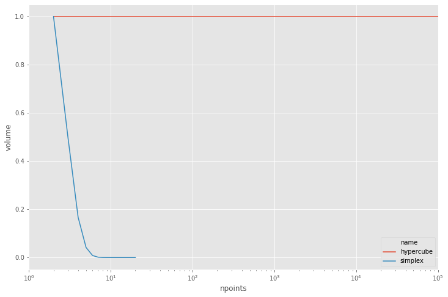

Seismic Tomography
from IPython.display import HTML
####HTML('<iframe width="854" height="422" src="https://www.youtube.com/embed/7zuICgLxSIk?rel=0&controls=0&showinfo=0" frameborder="0" allowfullscreen></iframe>')
Observed and synthectic seismograms

Data sizes
| Name | Count/size |
|---|---|
| Seismic events (earthquakes) | 100–1000 |
| Seismic stations that observe each event | 100–1000 |
| Seismograms (observed and synthetic) | 1-1000 TB |
| Elastic structure (3D mesh) | 1-1000 GB |
| Simulate one earthquake | 100-1000 CPU hours |
| Optimization iterations | ~30 |
- Problem: Local minima when high-frequency windows are included in early iterations.
Adaptable Seismic Data Format (based on HDF5)

Parallelism in Machine Learning


Curse of dimensionality
%matplotlib inline
import pandas
import seaborn
import matplotlib.pyplot as plt
import numpy as np
plt.style.use('ggplot')
plt.rc('figure', figsize=(12,8))
def hypercube(d):
return dict(name='hypercube', dim=d, npoints=2**d, volume=1)
def simplex(d):
return dict(name='simplex', dim=d, npoints=d+1, volume=1/np.math.factorial(d))
df = pandas.DataFrame([hypercube(d) for d in range(1,20)] + [simplex(d) for d in range(1,20)])
df.head()
| name | dim | npoints | volume | |
|---|---|---|---|---|
| 0 | hypercube | 1 | 2 | 1.0 |
| 1 | hypercube | 2 | 4 | 1.0 |
| 2 | hypercube | 3 | 8 | 1.0 |
| 3 | hypercube | 4 | 16 | 1.0 |
| 4 | hypercube | 5 | 32 | 1.0 |
df.tail()
| name | dim | npoints | volume | |
|---|---|---|---|---|
| 33 | simplex | 15 | 16 | 7.647164e-13 |
| 34 | simplex | 16 | 17 | 4.779477e-14 |
| 35 | simplex | 17 | 18 | 2.811457e-15 |
| 36 | simplex | 18 | 19 | 1.561921e-16 |
| 37 | simplex | 19 | 20 | 8.220635e-18 |
grid = seaborn.lineplot(x='npoints', y='volume', hue='name', data=df)
grid.axes.set(xscale='log', xlim=(1, 1e5));
